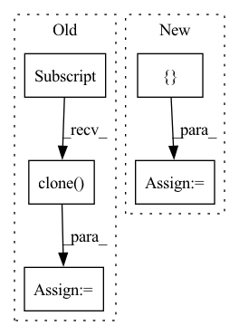

Pattern ID :38908
Before Change
mses.append(to_numpy(mse).item())
val_pvars = []
inputs = self.raw_time_series[:, 0, :].clone() .unsqueeze(1).to(self.model.device)
for _ in range(100):
val_x_pred = self.model.get_prediction_trace(inputs)
pvar = PVarianceLoss()(val_x_pred, self.raw_time_series.to(val_x_pred.device))
val_pvars.append(to_numpy(pvar).item())
print(f"Validation PVariance: {np.mean(val_pvars):.3f}")After Change
self.eprop.on_batch_begin(self)
inputs = self.true_time_series[:, 0, :].clone().unsqueeze(1).to(self.model.device)
x_pred = self.model.get_prediction_trace(inputs)
x_pred = torch.concat([ inputs, x_predIn pattern: SUPERPATTERN
Frequency: 4
Non-data size: 5
Instances Fragment ID: 110967135
Project Name: neurotorch/neurotorch
Commit Name: 9ba260c32491b2e046fbd60f8599ede10b9e6273
Time: 2023-02-01
Author: 93488840+AnthoDrouin@users.noreply.github.com
File Name: src/neurotorch/learning_algorithms/debug_e_prop_v5.py
M Class Name: SimplifiedEpropFinal
N Class Name: SimplifiedEpropFinal
M Method Name: train(4)
N Method Name: train(4)
M Parent Class:
N Parent Class:
M File Name: src/neurotorch/learning_algorithms/debug_e_prop_v5.py
N File Name: src/neurotorch/learning_algorithms/debug_e_prop_v5.py
M Start Line: 116
M End Line: 145
N Start Line: 126
N End Line: 146
Before Change
model_param = model_dict[model_name].clone()
elif backbone_type == "OTEEfficientNet":
chkpt_name = "head.fc.weight"
model_param = model_dict[model_name] .clone() .t()
if model_name not in model_dict or chkpt_name not in chkpt_dict:
logger.info(f"Skipping weight copy: {chkpt_name}")After Change
if "head.fc.bias" in chkpt_dict.keys():
param_names.append("output.fc.bias")
elif backbone_type == "OTEEfficientNetV2":
param_names = [
"model.classifier.weight" Fragment ID: 110967134
Project Name: openvinotoolkit/model_preparation_algorithm
Commit Name: 645893988f346dd87d1b1868bf6c58f4b9784cb4
Time: 2022-04-06
Author: songki.choi@intel.com
File Name: mpa/modules/models/classifiers/sam_classifier.py
M Class Name: SAMImageClassifier
N Class Name: SAMImageClassifier
M Method Name: load_state_dict_mixing_hook(5)
N Method Name: load_state_dict_mixing_hook(5)
M Parent Class: ImageClassifier
N Parent Class: ImageClassifier
M File Name: mpa/modules/models/classifiers/sam_classifier.py
N File Name: mpa/modules/models/classifiers/sam_classifier.py
M Start Line: 120
M End Line: 146
N Start Line: 135
N End Line: 177
Before Change
// inputs, labels = self.mask_tokens(batch)
// return {"input_ids": inputs, "labels": labels}
// else:
labels = inputs[:, 1:] .clone() .detach()
inputs = inputs[:, :-1]
// props = props[:, :-1]
After Change
// inputs = inputs[:, :-1]
// props = props[:, :-1]
training_data = {}
for key in examples[0].keys():
training_data[key] = self._tensorize_batch([example[key] for example in examples])
return training_data Fragment ID: 110967145
Project Name: zabaras/transformer-physx
Commit Name: 7a4867f947ad2bd4f32f4a25f195d98422ff6385
Time: 2021-06-03
Author: ngeneva@nd.edu
File Name: trphysx/data_utils/data_utils.py
M Class Name: DataCollator
N Class Name: DataCollator
M Method Name: __call__(2)
N Method Name: __call__(2)
M Parent Class:
N Parent Class:
M File Name: trphysx/data_utils/data_utils.py
N File Name: trphysx/data_utils/data_utils.py
M Start Line: 25
M End Line: 36
N Start Line: 35
N End Line: 39
Before Change
noisy_wavs, (batch_size * num_blocks, 16384, 1)
)
zeros = torch.zeros(batch_size, num_blocks * 16384, 1)
zeros[:, :wav_size, :] = clean_wavs
clean_wavs = zeros.clone()
clean_wavs = torch.reshape(
clean_wavs, (batch_size * num_blocks, 16384, 1)
)
After Change
clean_wavs.shape[0], hparams["chunk_size"], device=clean_wavs.device
)
clean_wavs = torch.cat([clean_wavs, padding_elements], dim=1)
noisy_wavs = torch.cat([ noisy_wavs, padding_elements = create_chunks(
noisy_wavs,
chunk_size=hparams["chunk_size"],
chunk_stride=hparams["chunk_size"], Fragment ID: 110967156
Project Name: speechbrain/speechbrain
Commit Name: c91d417913af7aef5b1cf8937fb9d14754b5daa4
Time: 2021-07-13
Author: mirco.ravanelli@gmail.com
File Name: recipes/Voicebank/enhance/SEGAN/train.py
M Class Name: SEBrain
N Class Name: SEBrain
M Method Name: evaluate_batch(3)
N Method Name: evaluate_batch(3)
M Parent Class: sb.Brain
N Parent Class: sb.Brain
M File Name: recipes/Voicebank/enhance/SEGAN/train.py
N File Name: recipes/Voicebank/enhance/SEGAN/train.py
M Start Line: 235
M End Line: 253
N Start Line: 235
N End Line: 255